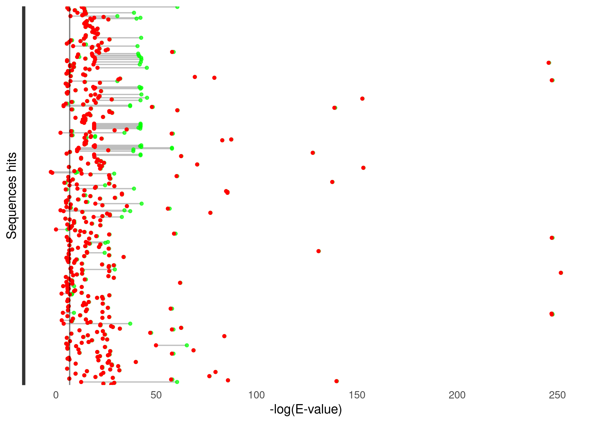
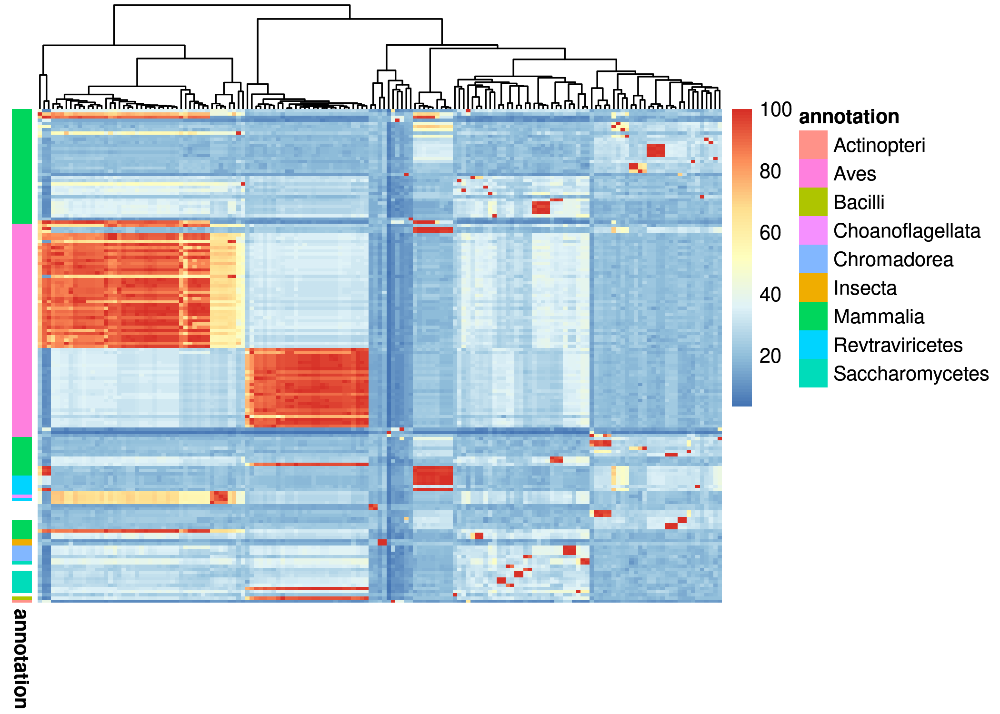
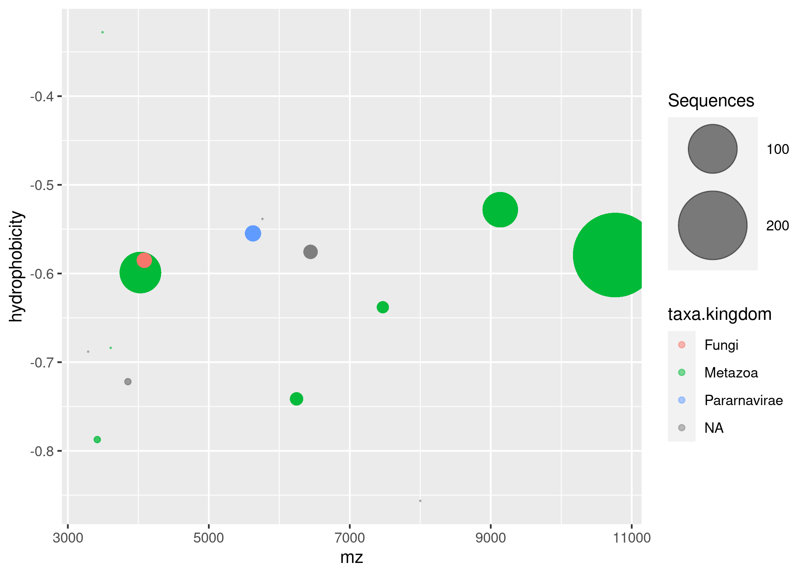

The goal of HMMERutils is to provide convenient functions search for homologous sequences using the HMMER API, annotate them taxonomically, calculate physicochemical properties and facilitate exploratory analysis of homologous sequence data.
Installation instructions
Get the latest stable R release from CRAN. Then install HMMERutils from Bioconductor using the following code:
if (!requireNamespace("BiocManager", quietly = TRUE)) {
install.packages("BiocManager")
}
BiocManager::install("HMMERutils")And the development version from GitHub with:
BiocManager::install("currocam/HMMERutils")Example
This is a basic example which shows you how to read HMMER files into HMMERutils’ tidy DataFrame and take advantage of the HMMER information, as well as the taxonomic and physicochemical information inferred from the sequence. As an example, we will use the results of the PHMMER example search, where we searched for sequences homologous to ABL1 in the PDB.
library("HMMERutils")
library(tidyverse)
## Downloaded files from HMMER
xml_path <- system.file(
"/extdata/ABL_TYROSINE_KINASE.xml",
package = "HMMERutils"
)
fasta_path <- system.file(
"/extdata/ABL_TYROSINE_KINASE.fa",
package = "HMMERutils"
)
ABL1_homologous <- read_hmmer_from_xml(xml_path, fasta_path) %>% # read them
extract_from_HMMER_data_tbl() %>% # extract the information into a DataFrame
dplyr::filter(hits.evalue < 0.01) %>% # filter out non-significant sequences
dplyr::distinct(hits.fullseq.fasta, .keep_all = TRUE) %>% # filter out redundant sequences
add_taxa_to_HMMER_tbl(mode = "local") %>% # add taxonomic information
add_physicochemical_properties_to_HMMER_tbl() # calculate theoretical physical and chemical propertiesNow, we can explore the e-values of the sequences we have obtained in search of red flags. We can see, for example, sequences whose evalue value is significant but that of their best domain is not.
HMMERutils::hmmer_evalues_cleveland_dot_plot(
HMMER_tidy_tbl = ABL1_homologous,
threshold = 0.001)
Observe how the sequences are clustered according to their percentage sequence identity and compare it with their phylogeny after we exclude Homo sapiens. First, aligning each sequence pair and calculating its percentage identity:
pairwise_identities_ABL1_homologous <- ABL1_homologous_non_human %>%
pairwise_alignment_sequence_identity(
seqs = .$hits.fullseq.fasta
aln_type = "global",
pid_type = "PID1",
allow_parallelization = "multisession"
)And then calling the plot method with the type “hist” or “heatmap”.
plot(
pairwise_identities_ABL1_homologous,
type = "heatmap",
annotation = ABL1_homologous_non_human$taxa.class
)
And how the physical and chemical properties of the sequences are grouped according to phylogeny.
ABL1_homologous %>%
dplyr::distinct(hits.name, .keep_all = TRUE) %>%
dplyr::group_by(taxa.kingdom,taxa.family)%>%
dplyr::mutate(
hydrophobicity = mean(properties.hydrophobicity),
mz = mean(properties.mz),
size = n()) %>%
ggplot(aes(x=mz, y=hydrophobicity, size = size, color = taxa.kingdom)) +
geom_point(alpha=0.5) +
scale_size(range = c(.1, 24), name="Sequences")
Citation
Below is the citation output from using citation('HMMERutils') in R. Please run this yourself to check for any updates on how to cite HMMERutils.
print(citation("HMMERutils"), bibtex = TRUE)Please note that the HMMERutils was only made possible thanks to many other R and bioinformatics software authors, which are cited either in the vignettes and/or the paper(s) describing this package.
Code of Conduct
Please note that the HMMERutils project is released with a Contributor Code of Conduct. By contributing to this project, you agree to abide by its terms.
Development tools
- Continuous code testing is possible thanks to GitHub actions through usethis, remotes, and rcmdcheck customized to use Bioconductor’s docker containers and BiocCheck.
- Code coverage assessment is possible thanks to codecov and covr.
- The documentation website is automatically updated thanks to pkgdown.
- The code is styled automatically thanks to styler.
- The documentation is formatted thanks to devtools and roxygen2.
For more details, check the dev directory.
This package was developed using biocthis.